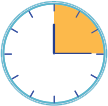

مقایسه کسرها
 فعٌالیت
فعٌالیت
۱- پدر به هرکدام از آنها یک مقدار مساوی پول داد. مهدی
اگر صورت دو کسر برابر باشد کدام کسر بزرگتر میشود؟ توضیح دهید.
1
/
2
پول خود، و حسین
1
/
3
پولش را صدقه داد.
با رسم شکل نشان دهید کدام یک بیشتر صدقه دادهاند.
حالا بین دو کسر علامت < با > قرار دهید.
اگر صورت دو کسر برابر باشد کدام کسر بزرگتر میشود؟ توضیح دهید.
۲- مادر مهدیه و زهرا به انها پول داد. مهدیه
2
/
3
پولش را و زهرا
1
/
3
پولش را ضدقه داد. به کمک رسم شکل، در دایره علامت مناسب را قرار دهید و برای مقایسه دو کسر با مخرج مساوی
نتیحه
گیری کنید.
2
/
3
1
/
3
کامل کن
عقربهی بزرگ ساعت 15 دقیقه حرکت کرده است.
زاویهی حرکت این عقربه را زاویهی راست یا زاویهی قائمه میگویند.

زاویهی حرکت این عقربه را زاویهی راست یا زاویهی قائمه میگویند.
زاویههای یک مستطیل چه نوع زاویهای هستند؟
مستطیل چند زاویه دارد؟
۵۵